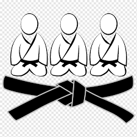
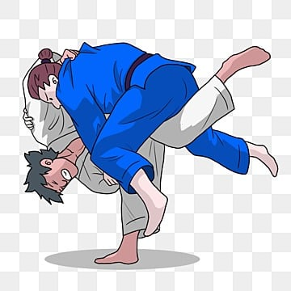

quem trouxe o jiu-jitsu para o brasil foi Mitsu Maeda em 1904 ele deixou o japao decidido a mostrar a arte marcial pelo mundo.
o jiu-jitsu e uma arte marcial que tem po objetivo conquistar posiçoes de controle sob o adversario ate o xeque-mate a finalizaçao.
OQUE E PROIBIDO NO JIUJITSUos dedos para trás; Segurar na faixa do adversário e projetá-lo de cabeça ao solo enquanto se defende
